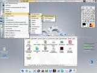

|
|
Eine GNU/Linux Distribution basierend auf Gentoo Linux A GNU/Linux distribution based on Gentoo Linux
|
HOME English Version |


Jollix ist eine freie GNU/Linux Distribution, die direkt von CD läuft (LiveCD). Jollix ist ein speziell für Spiele und Multimedia vorkonfiguriertes Gentoo Linux, das automatisch gängige PC-Hardware erkennen und konfigurieren kann. Die LiveCD startet automatisch eine grafische Oberfläche (XFree und KDE), so dass direkt alle wichtigen Anwendungen benutzt werden können. Mehr Informationen gibt es hier.
|
News & Ankündigungen: 07.05.2004 - Jollix 0.3 Betatest Heute startet der Betatest der neuen jollix Version. Neue Features sind unter vielen anderen:
Für weitere Informationen und Fragen kann der jollix irc Channel auf Quakenet sowie die Mailingliste genutzt werden. |
 Kontakt: Oliver Schwinn patteh[AT]berlios[DOT]de or leave a message Jochen Spang knochen[AT]berlios[DOT]de or leave a message irc://irc.quakenet.org/jollix User Mailingliste Developer Mailingliste |
| Powered by: | Hosted by: | Partner: | ||
 |
|